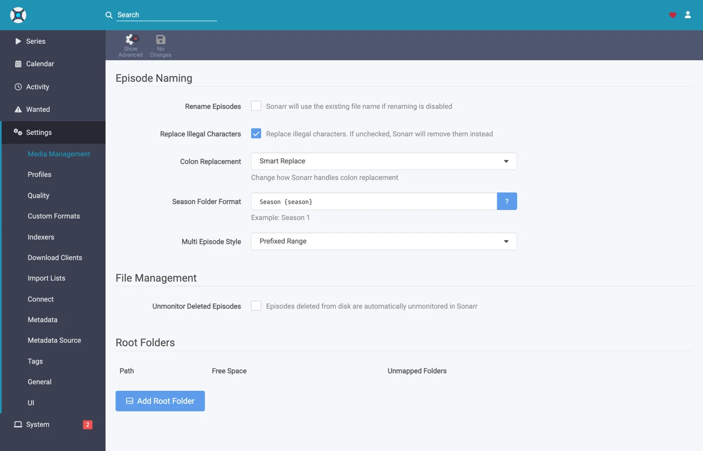
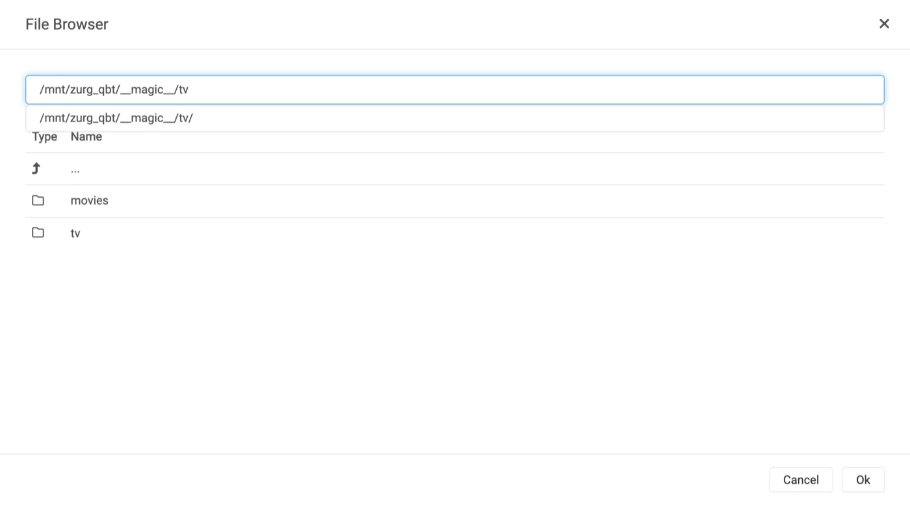
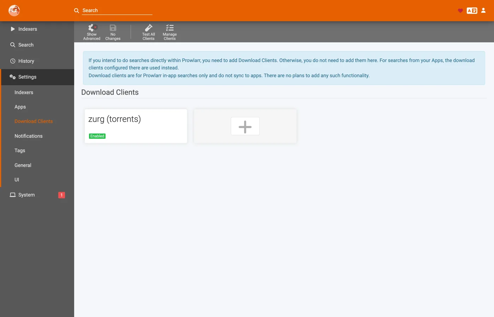
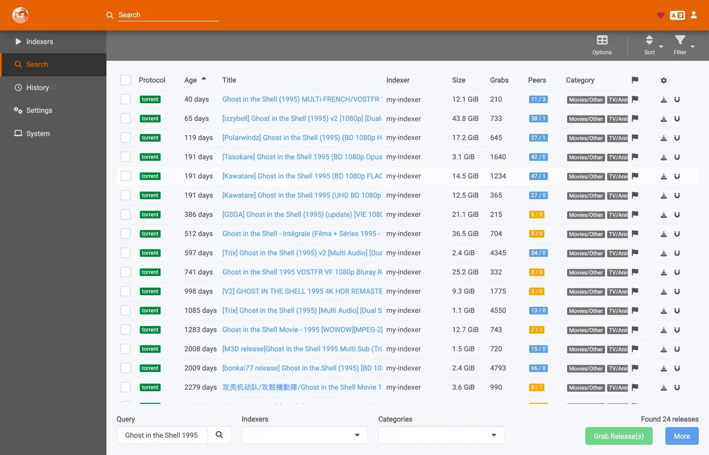

Sonarr 和 Radarr 配合种子使用，手把手教程
三种方式可以把 Sonarr 和 Radarr 接到 zurg 上。真正的选择在于由谁来搜索：zurg 还是 *arr。选哪一种一节对比了两者。
前两种可以同时使用，它们共用同一个 __magic__ 文件夹。
上一篇教程讲的是让 *arr 通过 Usenet 连接 zurg，此时 zurg 扮演 SABnzbd。这篇讲的是另一半：zurg 扮演 qBittorrent，*arr 交给它的是磁力链接或 .torrent 文件，而不是 NZB，资源会被放到网盘账号里，而不是新闻服务器上。导入的方式是一样的，都是在 __magic__ 里改个名字，不需要下载任何东西来导入，也不需要复制。
*arr 发送的是哪一种，并不只是外观上的差别。 .torrent 通常会把文件本身上传到账号；只有磁力链接才是仅凭信息哈希添加的。在仅缓存模式（默认设置）下，TorBox 和 Debrid-Link 拿到的是信息哈希，因为这是它们在不添加未缓存资源的情况下拒绝该资源的方式。磁力链接会让账号根据哈希去推算种子里有什么内容，而私有种子的哈希在公共 swarm 里找不到可用于推算的信息。Real-Debrid 会因 magnet_error 报错，且没有任何文件；TorBox 则会接受它，然后卡在 checking 状态，没有文件列表、没有大小，还给出一个百天的预估时间，所以这次抓取既不会失败，也不会完成。.torrent 文件会直接用哈希去查询账号的缓存，因此账号里已经有的内容会立即添加，完全不需要解析磁力链接。这也正是私有索引器在这里能用的原因：只要账号里已经有相应内容，它们的资源就能添加，而对于社区共享的内容来说，这通常就是常见情况。请把 *arr 指向那些提供 .torrent 文件而不是磁力链接的索引器，私有索引器一般都是这样。
下面的所有内容，都是在一台实际运行的服务器上、使用真实的 AllDebrid 账号捕获的，对应的版本为 zurg 2026.08.30.0459-nightly-73-g5b4c9790、Sonarr 4.0.19.2979、Radarr 6.3.0.10514 和 Prowlarr 2.5.2.5491。主机名和用户名已改为 you@zurg-server。索引器名称写作 my-indexer。API 密钥和库数量均为示例。捕获的输出中，除此之外没有改动任何内容。
开始之前
- zurg 需要一个能添加种子的账号：Real-Debrid、AllDebrid、TorBox、Premiumize、Debrid-Link 或 Offcloud。这六家都直接接收上传的
.torrent文件，这正是私有 tracker 上的资源能够添加的原因。Usenet 账号两种形式都不接受：如果安装时唯一的提供方是nzb，它会接受每一次抓取，然后拒绝它们。zurg 启动时会明确提示这一点。 magic.enabled必须为true。 没有它，保存路径就不存在，每次导入都会失败。参见__magic__。- 挂载点必须能被 *arr 看到，路径为 zurg 报告的路径。 如果 *arr 运行在容器里，请先阅读
第 8 步 ，再进行任何配置。如果它作为普通应用安装在同一台机器上，它能看到 zurg 挂载的位置，但每个系统都有一个需要注意的地方：
前两项直接在 zurg 的工作目录中的配置文件里检查。在 Windows 上，请改用记事本打开 config.yml。
$ grep -A3 '^providers:' config.yml
providers:
- type: alldebrid
token: <redacted>
$ grep -A3 '^magic:' config.yml
magic:
enabled: true
allow_delete: falseproviders: 列表的顺序在这里很重要。 一次抓取会按此顺序提供给每个能接收种子的账号；如果某个账号拒绝或卡住，就放弃它，并尝试下一个。如果你有两个账号，请把你更想优先使用的那个放在前面。
有两个配置项可以让账号脱离这一顺序。watchlist: true 会把某个账号排到最前面，无论它在文件中的位置如何；add_torrents: false 则会把它完全移出轮换，使其继续提供服务并读取其资料库，但不会再添加任何新内容，适用于归档账号，或配额已被占用的账号。无论哪种设置，Usenet 账号都不会被提供种子。两者的说明都见配置参考。
1. 打开端点
两种方式效果相同。两者都会写入 config.yml，而且都需要重启：提供 __magic__ 的路由和 qBittorrent 端点只会在 zurg 启动时注册一次。
方案 A — 仪表盘
打开 zurg 的控制面板，点击 Config，然后滚动到 __magic__ & Download Clients。打开 Serve __magic__ 和 qBittorrent Endpoint。

设置在 Config 里；以后抓取的内容到达时，你在 Magic 里看。

除非你的 *arr 把 zurg 挂载到了和 zurg 自己不同的位置，否则 qBittorrent Save Path 保持为空，具体见
方案 B — config.yml
手动添加这段配置，然后重启 zurg。
magic:
enabled: true
qbittorrent:
enabled: true
api_key: "" # empty = zurg generates one and keeps it
categories: [tv-sonarr, radarr]
save_path: "" # empty = <mount_path>/__magic__/__all__
cached_only: true # the default: only take what an account already holds分类不是文件夹。 它们都指向同一个地方，也就是 __magic__/__all__ 下该发布资源自己的文件夹。列表只是提前创建分类：客户端点击 Test 时会创建缺少的任何分类，zurg 会把它保存在 data/qbittorrent-categories.json 中。如果你使用 Prowlarr，它需要 prowlarr 这个分类，参见
重启 zurg，然后确认端点已注册，并且提供方已生效：

端点只需要一行 alldebrid，六种支持种子的类型中任意一种都可以。
启动日志也说明了同样的内容，值得花点时间读一读：
INFO router.qbittorrent qBittorrent API on /api/v2 and /qbittorrent/api/v2, save path /mnt/zurg_qbt/__magic__/__all__, categories tv-sonarr, radarr
INFO router.qbittorrent qBittorrent: cached-only, so a grab is only accepted onto an account that already holds the content; anything else is refused and the *arr takes its next release. Set qbittorrent.cached_only: false to let accounts download
INFO router.qbittorrent qBittorrent: torrents are offered to alldebrid, in that order2. 找到 API key
API 密钥是这个端点唯一的认证手段，所以请一次就设置正确，并且不要把它贴到任何公开的地方。
如果你把 api_key 留空，zurg 会在第一次启动时自动生成一个密钥，并写入 data/qbittorrent-apikey：
$ cat data/qbittorrent-apikey
fedcba9876543210fedcba9876543210
这只是示例，你的密钥会不一样。这个文件在重启后仍然保留，所以密钥生成后就不会变。
如果你自己设置了 api_key，密钥就在 config.yml 里，不会再写入其他文件。
这个端点不在 zurg 的基本认证范围内。 *arrs 会用下载客户端自己的方式进行认证。它们的 HTTP 层会把基本认证返回的 401 变成“unable to connect”，而这个提示没有任何可操作的信息。所以 zurg 特意把 /api/v2 排除在外。API 密钥就是唯一的门槛。请像对待 zurg 的其他部分一样对待这个端口：只在可信网络上使用，或者放在某种防护之后。
有三种方式提供密钥，都可以使用：
Authorization: Bearer <key>：客户端在 API Key 字段里填了值时发送的就是这个。这是推荐的方式，可以跳过登录步骤。- 在
auth/login中把密钥作为密码，用户名随意填。如果你更想填写 Username 和 Password，就用这种方式。 - zurg 自己的仪表盘用户名和密码，前提是
config.yml里设置了username:和password:。
3. 验证它能正常响应
在碰 Sonarr 之前先做这一步。只需十秒钟，就能在接下来的整个设置过程中分清问题出在 zurg 还是 *arr 上。
$ KEY=fedcba9876543210fedcba9876543210
$ ZURG=192.168.88.244:9995
$ curl -s "http://$ZURG/api/v2/app/webapiVersion"
Forbidden
$ curl -s -H "Authorization: Bearer $KEY" "http://$ZURG/api/v2/app/webapiVersion"
2.11.2
$ curl -s -H "Authorization: Bearer $KEY" "http://$ZURG/api/v2/app/version"
v5.0.4
$ curl -s -H "Authorization: Bearer $KEY" "http://$ZURG/api/v2/app/preferences" | jq .save_path
"/mnt/zurg_qbt/__magic__/__all__"在 PowerShell 中执行。请输入 curl.exe，而不是 curl：Windows PowerShell 里的 curl 是另一个命令。
PS> $KEY = "fedcba9876543210fedcba9876543210"
PS> $ZURG = "192.168.88.244:9995"
PS> curl.exe -s "http://$ZURG/api/v2/app/webapiVersion"
Forbidden
PS> curl.exe -s -H "Authorization: Bearer $KEY" "http://$ZURG/api/v2/app/webapiVersion"
2.11.2
PS> curl.exe -s -H "Authorization: Bearer $KEY" "http://$ZURG/api/v2/app/version"
v5.0.4
PS> (Invoke-RestMethod "http://$ZURG/api/v2/app/preferences" -Headers @{ Authorization = "Bearer $KEY" }).save_path
Z:/__magic__/__all__只返回 Forbidden 才是正常的结果。 客户端的第一次探测是一个未认证的 GET /api/v2/app/webapiVersion 请求。真正的 qBittorrent 在 API 存在但没有人登录时，就会返回 403。所以 zurg 也会返回同样的结果，客户端据此判断为"支持 v2，请进行认证"。如果返回的是普通的 404，则说明 qbittorrent.enabled 仍为 false，或者你修改后还没有重启 zurg。
接着检查错误的密钥是否确实会被拒绝：
$ curl -s -o /dev/null -w "%{http_code}\n" -H "Authorization: Bearer wrongkey" \
"http://$ZURG/api/v2/torrents/info"
403PS> curl.exe -s -o NUL -w "%{http_code}\n" -H "Authorization: Bearer wrongkey" "http://$ZURG/api/v2/torrents/info"
403save_path 是 zurg 交给客户端的路径，现在就检查一下客户端是否能打开这个路径。
两种 URL 形式都可以用，所以在客户端的 URL Base 字段中填哪种都行：
4. 创建根文件夹
在添加之前先把文件夹建好。*arr 的 Add Root Folder 对话框会浏览实时文件系统，不存在的文件夹不会出现在选项里。
$ mkdir -p /mnt/zurg_qbt/__magic__/tv /mnt/zurg_qbt/__magic__/movies
$ ls -d /mnt/zurg_qbt/__magic__/tv /mnt/zurg_qbt/__magic__/movies
/mnt/zurg_qbt/__magic__/movies
/mnt/zurg_qbt/__magic__/tvPS> New-Item -ItemType Directory -Force Z:\__magic__\tv, Z:\__magic__\movies或者在资源管理器里手动创建这两个文件夹。
把 /mnt/zurg_qbt 换成你自己的 mount_path。如果没有设置，Linux 上默认是 /mnt/zurg，macOS 上是 /Volumes/Zurg，Windows 上是 Z:。
根文件夹应该放在保存路径旁边，既不能是保存路径本身，也不能在它上层。 这和 Usenet 教程的规则一样，原因也相同：zurg 把 __magic__/__all__ 报告为保存路径。如果根文件夹就是下载客户端的输出文件夹，两个客户端都会触发健康检查；如果根文件夹包含了输出文件夹，Radarr 也会触发。而并列放置则不会触发任何一个。那份指南里有做错时的截图。
种子还有另一个专门的原因：如果移动的目标位置在 __magic__ 之外，这就是两个文件系统之间的移动，实际上是复制。而从网盘挂载点复制，会通过网络把整个发布内容重新读取一遍。保持 Remove Completed 开启（
两个卷之间的移动同样是复制。这在 Docker 中尤其要注意，第 8 步会讲到。
5. 在 Sonarr 中添加客户端
全新的 Sonarr 会在首次启动时用一个界面挡住所有操作。选择 Forms (Login Page)，设置用户名和密码，然后点击 Save。

在 Authentication Method 不是 None 之前，它不会让你继续。

点击 Save 后，你会被退出一次，并进入登录页面。

Settings → Download Clients
前往 Settings → Download Clients。全新安装后，这里只有一个 + 卡片。

点击 "Download Clients" 下面的 +，不要点further 下面 "Remote Path Mappings" 里的那个。
在 Torrents 列中选择 qBittorrent。

zurg 专门模仿 qBittorrent，所以列表里其他选项都不管用。这两列能告诉你正在看哪份指南：SABnzbd 在 Usenet 下，qBittorrent 在 Torrents 下。
对话框会打开 qBittorrent 的默认值：localhost、端口 8080、没有密钥。

每个字段该填什么

图中的 API 密钥只是示例，请粘贴你自己的密钥。
在 Docker 中，"localhost" 和主机名都会出错。 在容器内部，localhost 指的是容器本身，而机器自己的主机名通常会解析为 127.0.1.1，这同样是容器自己。这台机器的主机名是 zurg-server，在 Sonarr 容器里 zurg-server 解析成了 127.0.1.1，但同样的名字在宿主机的 shell 里却能正常使用。请使用宿主机的 局域网或 Tailscale IP，不要用 localhost，也不要只用裸主机名。
点击 Test。绿色的对勾表示客户端的检查通过了，包括 API 版本、认证、分类和种子列表。

现在点击 Save。

6. 在 Sonarr 中添加根文件夹
前往 Settings → Media Management，然后滚动到底部。

点击 Add Root Folder。会打开一个文件浏览器，显示 Sonarr 的文件系统。如果你用的是 Docker，这里显示的是容器内的文件系统。

直接输入路径，或者一层层点进去找。如果 Sonarr 真的能看到这个挂载，就能打开 __magic__，里面会显示你在第 4 步创建的内容，以及 zurg 自己放在那里的 __all__。这是确认绑定挂载是否正确的最快办法。

如果这里是空的或者报错，先停下来，把挂载修好再继续。

把路径补全为 __magic__/tv（Windows 上是 Z:\__magic__\tv），然后点击 Ok。

Free Space 显示 1 PiB，这是 zurg 报告的虚拟文件系统容量，并不是真实的磁盘。这是正常的。它也正是为了通过 *arr 在抓取前的可用空间检查。
7. 在 Radarr 中做同样的操作
除了两个值改了，其他都一样：分类是 radarr，根文件夹是 __magic__/movies。

Radarr 的首次运行也一样：先设置 Forms auth，然后登录。

Settings → Download Clients → +，然后在 Torrents 下选 qBittorrent。

主机和端口不变，密钥也不变。只有 Category 不一样，填 radarr，不是 tv-sonarr。
点 Test，看到绿色对勾后，点 Save。

然后进入 Settings → Media Management → Root Folders → Add Root Folder，添加 /mnt/zurg_qbt/__magic__/movies。
一个 zurg，两个客户端，一个队列。 每个客户端看到的种子列表只按分类过滤，没有别的条件。两个 Sonarr 都用 tv-sonarr 的话，会互相看到对方的抓取记录；Sonarr 用 tv-sonarr、Radarr 用 radarr 则不会。每个分类只配一个客户端，就不会遇到这个问题。
8. 如果你的 *arr 运行在 Docker 中
这一步适用于 Linux 主机上的 Docker。在 macOS 和 Windows 上，请把 *arrs 当作普通应用来安装，具体见
这里遇到的三个问题和 Usenet 教程一样，修复方法也一样：挂载点就是挂载点。所以这里只给简短版本。详细内容见该指南的第 8 步。
zurg 报告的路径，必须是客户端能打开的路径。 如果容器挂载库的位置和 zurg 不同，每次导入都会失败，并出现 download doesn't contain intermediate path，或者远程路径健康检查报错。请把 qbittorrent.save_path 设为客户端看到的路径，或者添加远程路径映射：
qbittorrent:
save_path: "/data/zurg/__magic__/__all__" # what the *arr sees, not what zurg sees保存路径和根文件夹共用一个卷。 不要给容器挂载 __magic__/__all__ 和 __magic__/tv 两个卷。两者之间的重命名会在容器内失败。这时客户端会把每次导入的内容从你的账户复制一份，写到 zurg 所在的磁盘上，而且不会给出任何提示。请只挂载一个卷，让它包含 zurg 的整个挂载内容，然后通过这个卷访问两个文件夹。下面的 bind 挂载就是这个卷。
绑定挂载的父目录，而不是挂载点本身。 重启 zurg 时会先卸载再重新挂载。如果容器绑定的是挂载点本身，它会保留已失效的 fuse 连接，之后的每次读取都会返回 Socket not connected。而且两个客户端在抓取前都会检查可用空间，所以每个版本都会被静默拒绝。请用 rslave 绑定父目录，这样重新挂载时会作为子挂载事件到达，容器能够跟随。本环境中的容器是在 zurg 挂载之前启动的，但挂载点仍然出现在了容器内：
$ docker exec sonarr df -h /mnt/zurg_qbt
Filesystem Size Used Avail Use% Mounted on
zurg{8amax}: 1.0P 0 1.0P 0% /mnt/zurg_qbt9. 跟踪一次抓取的完整过程
添加一个内容，手动抓取，然后完整跟踪它的整个过程。下面的所有内容，都是按照上面的设置进行的一次真实抓取：Ghost in the Shell (1995)，从索引站手动抓取的。
抓取
打开电影,点击 Interactive Search,然后选一个版本。

Source 列显示 torrent,这就是这个接口使用的协议。点击该行末尾带圆圈箭头的按钮即可抓取它。如果客户端要求你先确认映射关系:

当版本与库不能完全匹配时,会出现 Override and Grab。检查映射关系,然后点击 Grab Release。正常抓取时永远不会出现这个对话框。
账户接管下载
zurg 日志里，一次添加操作由三行组成：接收它的账户、被提交的任务，以及 finished。下面这段截图来自旧版本，只记录了后两行：
INFO router.qbittorrent qBittorrent: [Polarwindz] Ghost in the Shell (1995) (BD 1080p HEVC FLAC) (0c5e4077…) added to alldebrid as 720824192
INFO router.qbittorrent qBittorrent: [Polarwindz] Ghost in the Shell (1995) (BD 1080p HEVC FLAC) (0c5e4077…) finished on alldebridhash 是客户端发来的 info hash。added … as 720824192 是账户给它分配的自身 ID。这个版本已经在账户上缓存过，所以 finished 大约一秒后就出现。没有缓存的版本会在这两行之间停留一段时间，因为账户正在下载它。这段时间里账户在做什么，客户端的队列会显示出来：
如果 swarm 卡住了，会显示 Downloading，速率和做种数都是零，而不是卡住的警告。stalledDL 是 *arrs 用来处理下载失败的状态，而一个没有做种者的 swarm 并不能说明这个资源有问题。
完整的 magnet 都会传给账户。zurg 会转发客户端抓取时使用的显示名称，以及它指定的所有 tracker。对于只发布 magnet 的索引器来说，显示名称是唯一能找到发布名称的地方。如果没有它，只要元数据一直没有解析，TorBox 就会把未解析的抓取项显示成四十字符的哈希。.torrent 自带名称和 tracker，所以不会额外添加任何内容。例外是 TorBox 和 Debrid-Link 上的仅缓存模式（默认设置）。这两个服务只按哈希查询，因为缓存命中时会返回真实名称。
导入过程
Activity → Queue，然后是 Activity → History。两条事件只相隔几秒，依次是 Grabbed，然后是 Movie Imported：

展开已导入的那一行，看看路径。Source 是 /mnt/zurg_qbt/__magic__/__all__/[Polarwindz] …/[Polarwindz] ….mkv，Imported To 是 /mnt/zurg_qbt/__magic__/movies/Ghost in the Shell (1995)/…。文件其实从没离开 __magic__，所以这次导入本质上就是一次重命名。这张截图是在资源库移到 __all__ 下面之前拍的，所以它的来源路径比你那边看到的少一层。
客户端决定不导入的抓取结果，会以警告的形式留在队列里。这张截图队列中的那一行，是质量配置文件拒绝的一次升级。它可见，点一下 Remove 就能删掉，但它本身不会清除任何东西：


Status: Downloaded，Size 17.2 GiB。但为了让它显示成这样，并没有下载任何东西。文件的字节是在有东西播放该文件时，从账户里实时读取的。
确认文件是真实的
刚才导入把文件移到了根文件夹。读取其中一个文件的首尾两端，然后让 ffprobe 告诉你它是什么：
如果你的 shell 找不到 ffprobe，就用 ~/zurg/bin/ffprobe：安装程序在没有安装过的情况下会在那里放一份自己的副本。
$ F="/mnt/zurg_qbt/__magic__/tv/One Piece/Season 23/[AnoZu] One Piece S23E21 1080p CR WEB-DL AAC 2.0 H.264.mkv"
$ ls -la "$F"
-rw-rw-r-- 1 you users 1446325722 Aug 31 00:44 …mkv
$ dd if="$F" bs=1M count=1 >/dev/null
1048576 bytes (1.0 MB, 1.0 MiB) copied, 0.00592934 s, 177 MB/s
$ ffprobe -v error -show_entries format=duration,size,format_name \
-of default=noprint_wrappers=1 "$F"
format_name=matroska,webm
duration=1415.808000
size=1446325722在 PowerShell 里，从 zurg 的文件夹运行。除非你的 PATH 里已经有 ffprobe，否则安装程序会把 bin\ffprobe.exe 放在那里；如果已经有，就直接输入 ffprobe：
PS> $F = Get-Item -LiteralPath "Z:\__magic__\tv\One Piece\Season 23\[AnoZu] One Piece S23E21 1080p CR WEB-DL AAC 2.0 H.264.mkv"
PS> $F.Length
1446325722
PS> bin\ffprobe.exe -v error -show_entries format=duration,size,format_name -of default=noprint_wrappers=1 $F.FullName
format_name=matroska,webm
duration=1415.808000
size=1446325722这个是 Sonarr 抓取的文件——一集以同样方式拉取，导入到 tv/One Piece/Season 23/。这是一个 23 分钟的 Matroska，直接从 debrid 账户读取。字节是在有东西读取它们时才传过来的，而不是在 *arr 导入时。
在 Sonarr 中看起来也一样


还是那两条历史事件，还是通过重命名完成导入，队列在导入完成的那一刻就清空了。缓存的资源从抓取到导入只需要几秒钟，所以这里没有下载中的截图。
10. Prowlarr，手动抓取
Prowlarr 与其他两个工具连接的是同一个端点，它和它们共用 qBittorrent 客户端代码，但它不是导入工具。它没有媒体库，也从不导入任何内容。它能做的是手动把一个资源推送到账户里，这正是它的下载客户端的用途。
Prowlarr 首次运行时，显示的也是和另外两个工具相同的 Forms-auth 界面。


进入 Settings → Download Clients → +，然后选择 qBittorrent。在 Prowlarr 的选择器里，所有客户端都排在同一个按字母排序的列表中，而不是 *arr 那样的两列。主机、端口和 API 密钥都和其他工具一样填写。有两个字段和 *arr 不同：


点击 Test，出现绿色对勾后，再点 Save。


然后点 Search，输入你想要的内容，再把某一行推送给客户端：

这个资源会和 *arr 的抓取一样被添加到账户里，使用同样的添加路径、同样的分类和同样的 __magic__ 文件夹。我测试的这一个是已缓存的，不到一秒就变成了 finished。但没有任何东西会导入它。它就留在账户里，通过挂载点提供播放，这正是重点所在：Prowlarr 的推送功能是现在就把这个放到我的 debrid 账户上，而不是用于自动化的抓取、导入、清理流程。如果要用那套流程，请继续让 Sonarr 和 Radarr 指向该端点，并由 Prowlarr 来管理索引器。
11. 手动添加一个资源
zurg 的仪表盘没有添加按钮。你仍然可以自己把一个发布版本交给 zurg，并发送到正确的 Sonarr 或 Radarr。通过这个端点添加它，并带上该应用的分类。每个应用只查看自己的分类。四个应用各用一个分类，每个只能看到自己添加的内容。
KEY=your-qbittorrent-api-key
curl -H "Authorization: Bearer $KEY" http://localhost:9999/api/v2/torrents/add \
-F 'urls=magnet:?xt=urn:btih:<hash>&dn=Movie.Title.2012.1080p.WEB-DL' \
-F category=radarr4k在 PowerShell 中使用 curl.exe 而不是 curl：
$KEY = "your-qbittorrent-api-key"
curl.exe -H "Authorization: Bearer $KEY" http://localhost:9999/api/v2/torrents/add `
-F 'urls=magnet:?xt=urn:btih:<hash>&dn=Movie.Title.2012.1080p.WEB-DL' `
-F category=radarr4k.torrent 文件也可以。用 -F 'torrents=@Movie.Title.2012.1080p.WEB.torrent' 发送，代替 urls。
有四件事决定应用是否会导入它。
- 影视作品必须已经在该应用中。 它只会导入能与其管理的内容匹配的条目。
- 名称必须能说明内容是什么。 磁力链接的名称是它的
dn，.torrent文件的名称是它的文件名。zurg 会忽略 qBittorrent 的rename字段。Radarr 无法解析Sintel，并将其保留为 Unable to parse download。Sintel.2010.1080p.WEB-DL则成功导入。名称里要带上年份。 - 在应用第一次看到之前就把名称改对。 一旦 Radarr 判定某个下载无法解析，它会一直保留这个结论，直到 Radarr 重启。用更好的名称再次添加也不会改变结果。重启后它就导入成功了。
- 分类只是一个标签。 不在
qbittorrent.categories中的分类也会被接受，只是不会出现在分类列表中。之后你可以把发布版本转到另一个应用。拥有新分类的应用会在下次检查时导入它。
curl -H "Authorization: Bearer $KEY" http://localhost:9999/api/v2/torrents/setCategory \
-F hashes=<hash> -F category=radarr在 Windows 上，就是把 curl.exe 写在一行里，并像上面一样设置 $KEY。
你账户里已经有的发布版本也是同样的方式。这包括你从 DMM 发送过去的版本。zurg 会发现它已经在库中，于是把它记录到该分类下，而不会重复添加。你从未通过这个端点添加的发布版本，对 Sonarr 和 Radarr 来说是不可见的。zurg 只会向它们展示经由此端点进入的内容。
测试时间为 2026-10-04，使用 AllDebrid 账户和 Radarr 6.3。每部影片都通过重命名的方式导入到 __magic__/movies，没有复制任何文件。设置了其他分类的 Radarr 从未看到它。Sonarr 未经测试。
12. Plex 只读取一组文件夹
An import does not take a release out of zurg's own folders. A film Radarr placed in __magic__/movies is still in movies and in __all__. So Plex has to read one set of folders and never both.
If your Plex libraries already point at movies and shows then leave them. The *arr grabs appear there without any change. Add the __magic__ folders to Plex only if you want a library made of nothing but *arr imports and then take the other folders out. Plex with both finds every title twice.
Never add the root of __magic__ either. It holds __magic__/__all__ which is the whole library again.
13. 索引器，以及面向赞助者的 DMM
Sonarr 和 Radarr 通过 Prowlarr 搜索。这里任何公开的 torrent 索引站都能用，因为 zurg 会把磁力链接添加到你的 debrid 账户里。有些公开站点挂在 Cloudflare 后面，Prowlarr 没有 FlareSolverr 就不肯添加它们，这些就跳过吧。
如果你赞助了 zurg，那 DMM 也能当索引站用。它会搜索 DMM 的整个资源库，并把你的 debrid 账户里已经有的内容排在最前面。这种抓取是即时完成的。
- 从 gatekeeper 拿到你的 DMM API key：点 Connect GitHub，如果你在 Patreon 上赞助，之后再关联 Patreon。然后复制页面上显示的 DMM API key。这不是
第 2 步 里的 zurg key。同一个 key 也能用于 DMM 的 Usenet 索引站，设置地址在 debridmediamanager.com/newznab。 - 在 Prowlarr 里打开 Indexers → Add Indexer，选择 Generic Torznab。
- 填入你账户对应的 URL 和 key。API Path 保持为
/api。
TorBox 和 Premiumize 需要先在 DMM 里关联该服务的 key，DMM 页面上有对应位置。如果想排除你账户里还没有的内容，就在 URL 末尾加上 /cached。
保存索引站时，Prowlarr 会自动测试它。如果 key 被拒绝，说明赞助已经过期或者 key 填错了，报错信息会告诉你是哪一种。测试通过后，Prowlarr 会自己把 DMM 提供给 Sonarr 和 Radarr。所有应用共用一个 key，每分钟最多 20 次搜索。
14. 你的 Plex 观看列表
Sonarr 和 Radarr 可以跟随你的 Plex 观看列表。你在 Plex 上添加的任何内容都会被加入、搜索，并像其他任何获取内容一样通过 zurg 到达。
在每个应用中打开 Settings → Import Lists → + → Plex Watchlist，然后按下 Authenticate with Plex.tv。把根文件夹设置为你的 __magic__ 文件夹，并开启添加时搜索。Radarr 会获取列表中的电影，Sonarr 会获取其中的剧集。
zurg 有自己的 观看列表，它会从你直接提供给 zurg 的索引器中获取内容。二者选其一即可。两者同时使用的话，同一个标题会被获取两次。
如果要跟随其他列表，例如类型列表，请参阅 Sonarr 和 Radarr 中的列表。
如果导入是复制而不是移动
上面所有内容都依赖导入是一次重命名（rename）。有两件事决定这一点。一是容器如何访问挂载点，这只有你能改。把保存路径和根文件夹放在两个卷上，那么无论其他设置如何，每次导入都会变成复制。
只有当客户端认为下载完成后可以安全删除它时，才会移动已导入的文件。这需要三个条件同时满足：Remove Completed 已开启，种子已完成且处于暂停状态，并且客户端能看到做种限制已达到。zurg 会如实报告后两项：每个已完成的种子都会以暂停状态返回，分享率为 0，而分享率限制也是 0。Remove Completed 则需要你自己来设置。
如果它是关闭的，客户端就会改为复制。而在 debrid 挂载上，复制意味着要通过网络把整个发行版的每个字节读回来，再写入本地磁盘。第 9 步中的那个发行版原本是一次几乎没有移动任何数据的重命名，现在却会变成一次 17 GiB 的下载，只为导入一个本来就已经存在的文件。
当 zurg 拿到 *arr 的 API 密钥时，它会自动重新开启 Remove Completed。 拿到密钥的途径有两种：通过 Radarr 或 Sonarr 源（设置 enabled: false 即可），或者通过仪表盘上要求填写密钥的横幅。zurg 会在启动时检查一次，之后每十分钟检查一次，并且在 *arr 第一次调用 zurg 时也会检查。它会通过 *arr 自身的 API 把 Remove Completed 打开。如果客户端没有通过自己的 Test，就无法被修改，此时 zurg 会保留一条警告并注明原因。
*arr 不会告诉你它进行了复制。 无论哪种方式，导入都会显示为成功。移动操作在 zurg 的日志中只会留下一行 MOVE __magic__。通过 zurg 自带挂载进行的复制会落在 data/local 中。zurg 大约两分钟内就会发现它，把它转换回一次放置（placement），删除这个副本，并记录 A client copied …，同时在仪表盘上显示一条横幅。通过你自己挂载进行的复制则是一次 PUT，并且携带该发行版的完整字节数，zurg 会拒绝它。那次复制所耗费的下载流量无法找回。
使用 Use Hardlinks instead of Copy 并不能替代它。 客户端只有在已经决定复制之后才会查看这个选项，因此它无法把复制改回移动。
超时与仅缓存模式
qbittorrent:
cached_only: true
download_timeout_mins: 15旧版配置。 cached_only 出现之前，"只接受缓存"是用 download_timeout_mins: 0 来写的。如果配置里只写了 download_timeout_mins、没有 cached_only，它的含义保持不变：0 表示只接受缓存，其他任何值都表示允许下载。两者都写了但互相矛盾时，以 cached_only 为准，zurg 启动时会记录一条警告。
什么算"有进展"。 阶段变化，或进度上升，才算有进展。判断依据是账号返回的原始小数比例，而不是取整后的百分比。比如 100 GB 的资源，1% 就是 1 GB。账号正在解压的资源不计时：这个阶段的数字会一直停在那里，直到解压完成。
十五分钟是实测出来的，不是随便定的。 AllDebrid 会把一个正常的任务放进它自己的队列里，所有计数都是零。我们测了两次，它分别停了 580 秒和 622 秒，之后才开始下载，几秒钟就下完了。如果默认值是十分钟，这两次都会被放弃。抓取数据，以及把各个账号自己的说法映射到 *arrs 能理解的五种状态上的对照表，都在 Torrent lifecycle 里。
超时会删除什么。 只删除那个账号上的实例，而且仅限于 zurg 为这次抓取自己添加、且一直没有完成的那个实例。其他东西都不动。如果所有账号都试过了，抓取会被报告为出错，并附上原因，列出每个账号以及它做了什么。
如果你在账号上手动删除了某个 torrent，抓取会立刻转到下一个账号。六个服务都会明确说明 torrent 已经不存在了。
整个添加过程的时限是 75 秒。 *arrs 会在 100 秒时取消 torrents/add，并把超时报告为连接失败，而且没有办法调高这个时限。所有账号共用同一个截止时间，所以三个账号完全够用，第四个账号只能用前三个没花完的时间。
仅缓存模式会在添加阶段就拒绝，而这个拒绝是 *arrs 唯一会处理的信号：它们会判定这次抓取失败，然后转到列表中的下一个资源。添加之后的所有情况，在 *arrs 看来都只是"下载进行中"的警告，它们会一直等下去。各账号的请求方式如下：
zurg 不会去调用 TorBox 的 checkcached 或其他缓存查询接口。这些接口只能说明服务端有没有这份内容，并不能说明你的账号最终能不能拿到可用的副本。
哪些可用，哪些不行
可用：
- 三个客户端的连接测试，包括 API 版本、身份验证、分类和种子列表。
- 在 Sonarr 和 Radarr 中抓取、队列、历史记录、通过重命名导入，以及导入后的清理。
- 重新抓取账户已经持有的资源。*arr 会取回已完成的种子并导入，账户只保留一份副本。
- 多个账户：抓取请求会按
providers:中的顺序依次发给每个账户，遇到拒绝或卡住时转给下一个。 - 在 Prowlarr 中手动推送资源。
不支持：
- qBittorrent Web UI。 这里只提供 API，没有可以打开的页面。
- 做种、排队和优先级。 这里没有 swarm。暂停、强制开始、调整优先级、重新校验、移动位置和分享率限制都会被接受，但不会产生任何效果。
- 把失败作为一种正式状态。 qBittorrent 的 API 无法表示下载失败，所以没有任何账户能接收的资源会以警告的形式返回给 *arr，而不会加入黑名单。它会在队列中显示，并附上原因，只需点一下 Remove → Blocklist and Search 即可处理，但它不会自动清除，也不会在无人值守时重新抓取。这正是它与 SABnzbd 端点的真正区别：后者可以报告任务失败，并让客户端做出响应。
- 通过普通 HTTP URL 添加。
torrents/add只接受磁力链接和上传的.torrent文件。两个 *arr 发送的都是其中之一，直接的http://…/x.torrent会被拒绝。 - 在端点上启用 zurg 仪表盘的登录验证。 此功能没有生效。端点接受 API 密钥（作为 bearer token、登录密码或 Basic 请求头），或者 zurg 仪表盘的用户名和密码。
有一种抓取会直接从队列中消失，而不是显示为警告。 如果从来没有任何账户接收过该资源，即没有账户持有该哈希，也没有账户在获取它，那么十分钟后它会被标记为错误，并在一天后从种子列表中移除。因为没有可以报告状态的下载任务，而队列中出现一个不存在的任务，比完全没有更糟。其他所有失败仍然会保持可见。
被屏蔽的资源名称，仅限 Real-Debrid。 RD 会仅凭名称拒绝某些资源。自 2026 年 10 月 14 日起，共有十一个这样的字符串。WEB-DL、WEB.x264 和 WEB.H264 只在大小写完全一致时才会生效，因此 web-dl、Web-Dl 和场景命名中的 WEB.h264 都没有问题。WEBRip、BDRip、HDRip、DVDRip、HDTV.x264、HDTV.XviD、BluRay.x264 和 p.BluRay.DTS 则无论大小写如何都会生效。最后这一个要求前面紧跟一个 p，例如 1080p.BluRay.DTS。2002.BluRay.DTS 这样的资源没有问题。zurg 知道这些模式，遇到此类名称时会跳过 Real-Debrid，不再询问它，而是把抓取请求转给下一个账户。如果只使用 Real-Debrid，抓取会立即被拒绝，客户端则会转向它的下一个资源。在 TorBox 和 AllDebrid 上，同一个资源会正常添加。
故障排除
还是搞不定？去 Discord 上的 zurg-support 论坛问。获取帮助里写了要提供哪些信息。
状态数据存放在哪里
zurg 仪表盘上的 __magic__ 页面显示导入的结果。placements 是客户端移动过的文件，tombstones 是它们之后删除的任务文件夹。端点接收的发布会以行的形式列在它们所导入的文件夹下面。


参考文档列出了每个 qbittorrent: 键。客户端约定基于 Sonarr 和 Radarr 的源码编写，是端点需要遵守的规范，其中每一条说明都附有对应的文件和行号。